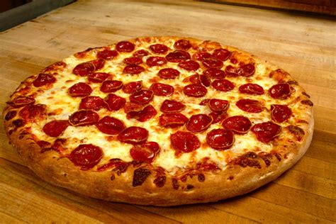

Classic Peperoni Pizza

Description
A trully classic and iconic dish, the peperoni pizza is a must for everybody looking to tame the hunger beast
This recipe is simple, involving a small amount of ingredients, time and willpower.
Ingredients
For the pizza base :
- ½ cup water
- ½ (12 ounce) can CONTADINA® Tomato Paste
- 1 teaspoon dried oregano, crushed
- 1 teaspoon dried basil, crushed
- ½ teaspoon garlic powder
- ½ teaspoon onion powder
- ½ teaspoon sugar
- ½ teaspoon salt
- ¼ teaspoon black pepper
For the pizza toppings :
- 1 cup shredded mozzarella cheese, or more to taste
- Peperoni got dammit!
Steps to success
- Preheat the oven to 425 degrees F (220 degrees C). Grease two 12-inch pizza pans.
-
Make sauce: Whisk together water, tomato paste, oregano, basil, garlic powder, onion powder, sugar, salt, and pepper in a medium bowl
until smooth. Set aside.
-
Make crust: Combine 2 cups flour, yeast, sugar, and salt in a large bowl. Add warm water and oil; mix until well blended, about 1 minute.
Gradually add remaining flour, a little at a time, until a soft, sticky dough forms.
-
Transfer dough to a floured surface; knead until dough is smooth and elastic, about 4 minutes. Add more flour as needed. (If using
RapidRise yeast, let dough rest, covered, for 10 minutes.)
- Divide dough in half. Lightly flour your hands, then pat each piece of dough onto the prepared pizza pans.
- Top dough with sauce, cheese, and pepperoni.
-
Bake in the preheated oven until crusts are browned and cheese is bubbly, 18 to 20 minutes. Rotate pizza pans between the top and bottom
oven racks halfway through baking.
- Enjoy eating your pizza 🍕
Back